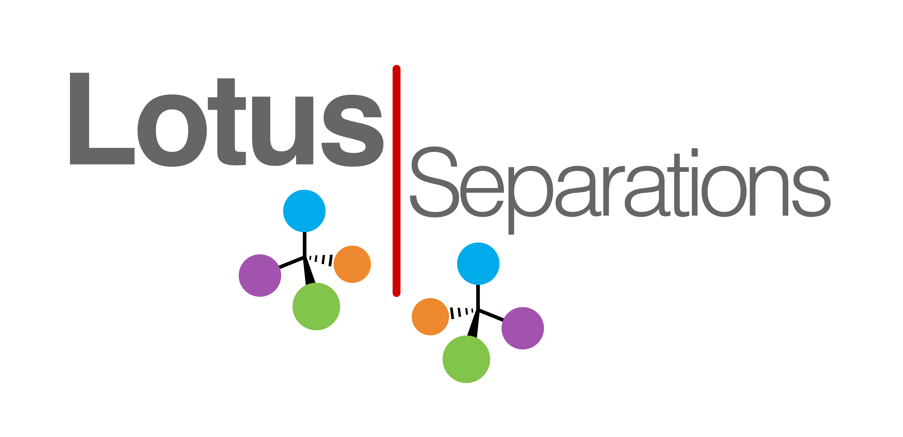
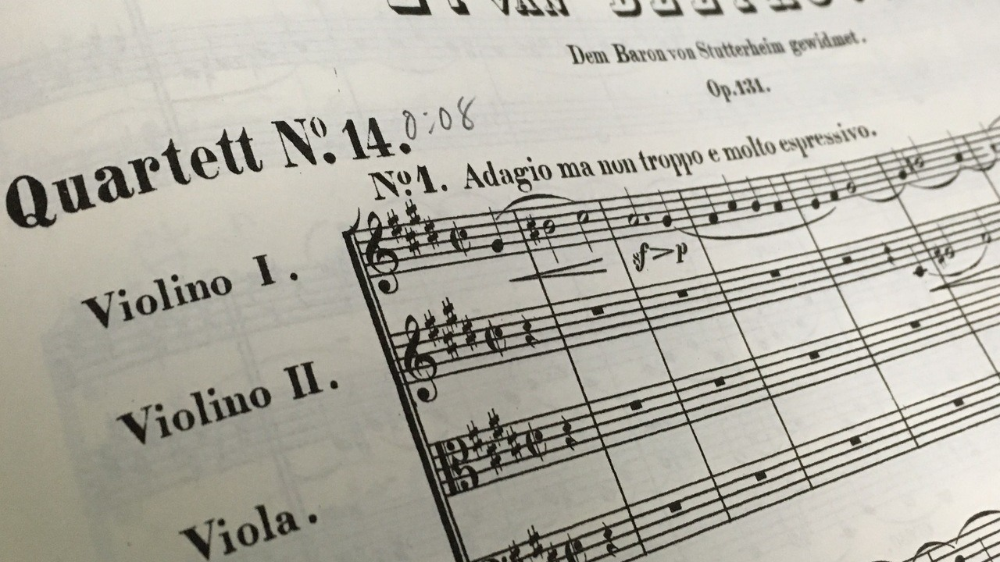
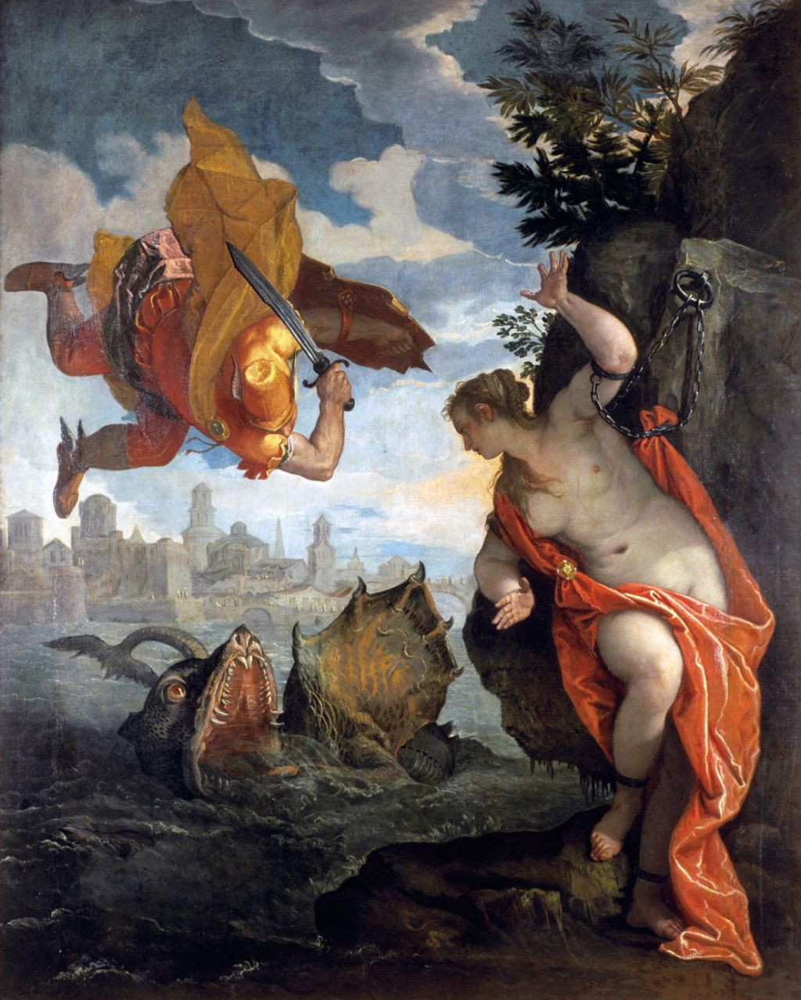

Who am I?
I'm Tim Ruszala, and I'm a software developer.
I graduated from Princeton summa cum laude with a musicology (!)
degree, but since then I've decided to channel my creative energies
into computers. Right now I'm studying computer science at the
Technical University of Berlin to touch up my computer know-how.
On this website you'll find a few projects that I've made for
fun to consolidate what I've learned, mostly written in Java,
Python, and HTML/CSS/Javascript. Scroll down further to see my CV.
Thank you for visiting! 😊
Projects
-

A business website built for Lotus Separations on commission. (The website is not yet live, but Figma design files are available for viewing.)
-

A python suite which I created and used to gather statistics about harmonies in the Beethoven String Quartets.
-

A web app which asks for your location, then shows you a city experiencing the same current temperature.
-
A portfolio of projects I completed while taking Algorithms and Data Structures at Princeton University.
-

Visualizes the recursive solution to a Towers of Hanoi puzzle using 64 discs. This program will take nearly six hundred million years to complete.
-

A tool I made to help a good friend make an index for his forthcoming translation of Ovid's Metamorphoses.
Curriculum Vitae
Education
Princeton University, September 2016 — June 2020
A.B. in Music, summa cum laude, GPA: 3.946
Certificate in European Cultural Studies
Technical University of Berlin, September 2021 —
Present
Bachelor in Computer Science
Honors
Asher Hinds Thesis Prize for Excellence in European Cultural Studies
(June 2020)
Elected to the Phi Beta Kappa society (June 2020)
Shapiro Prize for Academic Excellence (September 2018)
Bassoonist in the National Youth Orchestra of the United States of
America (2016)
Skills
Coding Languages: Java, Python, Javascript, HTML/CSS, C
Language Languages: Fluent German, Intermediate French, Intermediate
Italian, Intermediate Polish, Latin comprehension
Work Experience
Web Developer at Lotus Operations, 2021 —
Present
Research Assistant to Professor Dmitri Tymoczko, Summer 2019
Research Assistant to Professor Simon Morrison, 2017 — 2019
Intern at FrankfurtMain Kulturfonds, August 2018
Office Assistant at Princeton University Concerts, Spring 2017